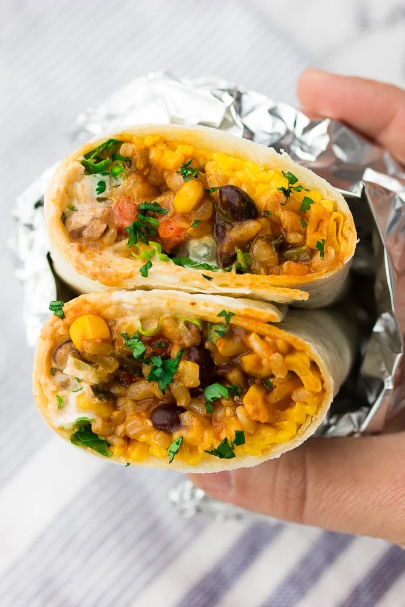

Vegan Burritos

The filling for these vegan burritos is ULTRA flavorful, satisfying and easy to make. The mixture can be made on the stove top or using an Instant Pot. No one will miss the meat and dairy!
Ingridients serves 16 people
- 4 tablespoons olive oil
- 2 medium red onion, chopped
- 2 red bell pepper, chopped small
- 6 cloves garlic, minced
- (2) 15-ounce can black beans, drained and rinsed
- 600 g uncooked short grain brown rice
- 450 g corn (frozen, fresh or canned)
- 130 g finely chopped kale
- 680 ml medium style salsa
- 950 ml water
- 2 teaspoon ground cumin
- 4 teaspoons chili powder
- 2 teaspoon smoked paprika
- 2 teaspoon salt, or more to taste
For serving
- 16 burrito sized flour tortillas
- 300 g chopped lettuce
- Vegan sour cream
- Vegan cheese shreds
- Chopped avocado or guacamole
- Chopped cilantro, diced tomatoes, chopped green onions, jalapeno slices
- Hot sauce
Instructions
- In a large pot with a lid, add the olive oil and warm over medium heat. Add the chopped onion, red pepper and garlic and saute for 2-3 minutes, stirring constantly.
- Now add the beans, rice, corn, kale, salsa, water, spices and salt. Stir, then turn the heat to high and bring to a boil. Lower the heat, place the lid on and simmer for about 45 minutes until the rice is cooked. Remove from heat and let the mixture sit for an additional 10 minutes. Now stir the mixture and serve.
Assemble the burritos
- Spoon some of the mixture into the centers of the tortillas. Add whatever additional toppings you'd like such as vegan sour cream, vegan cheese shreds, lettuce, etc. Fold two sides over the filling and roll up. Enjoy!
Freezer burritos
- Simply roll burritos with only the mixture and no additional toppings. Wrap each burrito in foil, then place them in a large freezer safe bag. Reheat in the microwave for about 2 minutes until warm.